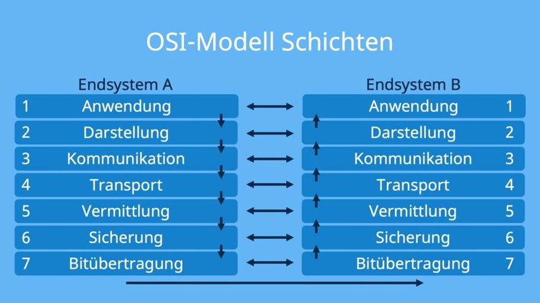

Schichtenmodell
- Das Schichtenmodell oder auch OSI Modell (Open Systems Interconnection) ermöglicht die standardisierte Kommunikation zwischen Computersystemen und besteht aus sieben Schichten
- Probleme werden leichter gefunden und innerhalb einer Schicht lösen (sehr nützlich, da unnötiger Aufwand vermieden wird)
- Die Schichten können miteinander kommunizieren und Daten unter sich austauschen, zudem hat jede Schicht eine spezielle, festgelegte Funktion

- Bei einer Kommunikation zwischen zwei Systemen werden alle Schichten mindestens zwei Mal angewendet, einmal beim Sender und einmal beim Empfänger (abhängig von den Zwischenstationen der Kommunikationsstrecke durchläuft die Kommunikation auch hier mehrmals das Schichtenmodell)
- 1. Schicht -> Bitübertragung = Umwandlung der Bits in ein zum Medium passendes Signal und physische Übertragung
- 2. Schicht -> Sicherung = Segmentierung der Pakete in Frames sowie Fehlererkennung, Fehlerbehebung und Datenflusskontrolle
- 3. Schicht -> Vermittlung = Weiterleitung der Datenpakete zum nächsten Knoten
- 4. Schicht -> Transport = Zuordnung der Datenpakete zu einer Anwendung
- 5. Schicht -> Kommunikation = Steuerung der Verbindungen und des Datenaustauschs
- 6. Schicht -> Darstellung = Umwandlung der systemabhängigen Daten in ein unabhängiges Format
- 7. Schicht -> Anwendung = Funktionen für Anwendungen sowie die Dateneingabe und -ausgabe